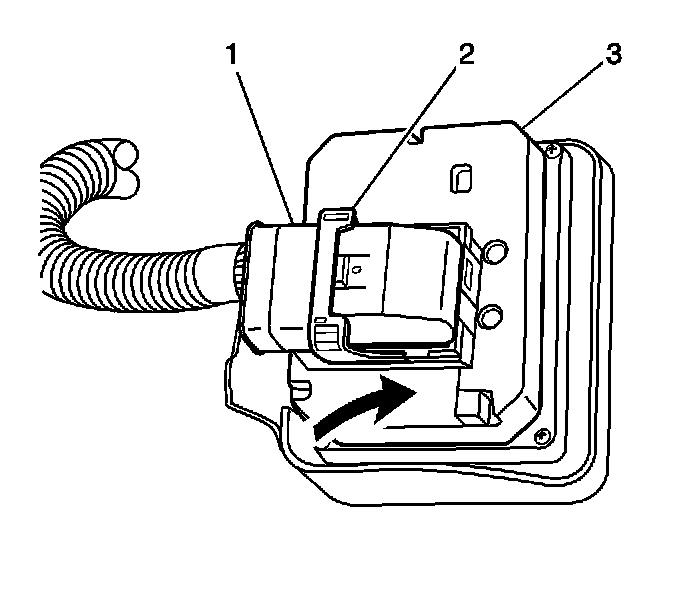
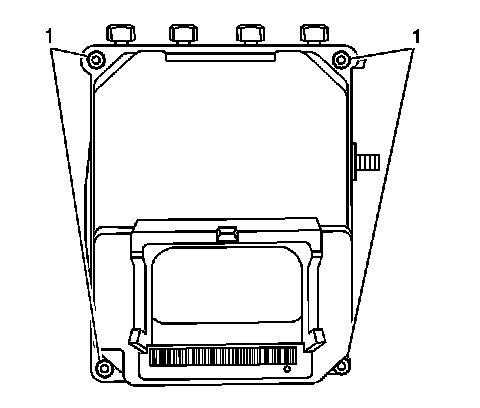
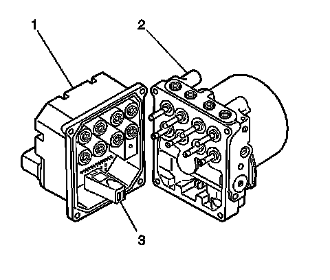
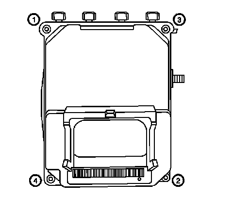
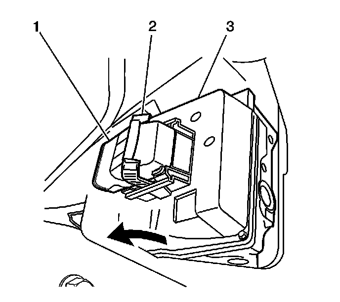

Electronic Brake Control Module: Service and Repair
Electronic Brake Control Module Replacement
Removal Procedure
Notice: To prevent equipment damage, never connect or disconnect the wiring harness connection from the EBCM with the ignition switch in the ON position.
1. Turn OFF the ignition.
2. Raise and support vehicle. Refer to Lifting and Jacking the Vehicle (Service and Repair) .
3. Remove the air deflector shield. Refer to Front Air Deflector Replacement (Service and Repair) .
4. Remove the right front wheelhouse liner. Refer to Wheelhouse Panel Replacement - Right Side (Service and Repair) .
Important: It is not necessary to remove the washer solvent container from the vehicle.
5. Remove the washer solvent container bracket. Refer to Windshield Washer Solvent Container Replacement (Service and Repair) .
Important: The area around the electronic brake control module (EBCM) must be free from loose dirt to prevent contamination of dissembled ABS components.
6. Thoroughly clean all of the contaminants from and around the EBCM assembly.
Notice: To prevent equipment damage, never connect or disconnect the wiring harness connection from the EBCM with the ignition switch in the ON position.
7. Press the retainer on the EBCM electrical connector (1).

8. Rotate the EBCM connector tab (2) forward to the unlocked position.
9. Disconnect the EBCM electrical connector (1) from the EBCM and position out of the way.

10. Remove the 4 EBCM to brake pressure modulator valve (BPMV) screws (1).

11. Clean the surface of the EBCM/BPMV assembly.
Important: The EBCM cannot be repaired. If faulty, the unit must be replaced.
12. Separate the EBCM (1) from the BPMV (2).
Installation Procedure
1. Clean the seal surface of the BPMV (2).
2. Install the EBCM (1) to the BPMV (2).
3. Make sure that the internal pump motor connector (3) is installed into the new EBCM (1) prior to EBCM replacement.

Notice: Refer to Fastener Notice (Fastener Notice) .
4. Install the 4 screws connecting the EBCM to the BPMV.
Tighten the screws in sequence (1-4) to 5 N.m (44 lb in).

Notice: To prevent equipment damage, never connect or disconnect the wiring harness connection from the EBCM with the ignition switch in the ON position.
5. Connect the EBCM electrical connector (1) to the EBCM (3).
6. Rotate the EBCM connector tab (2) rearward to the locked position.
7. Install the washer solvent container bracket. Refer to Windshield Washer Solvent Container Replacement (Service and Repair) .
8. Install the wheelhouse liner. Refer to Wheelhouse Panel Replacement - Right Side (Service and Repair) .
9. Install the air deflector shield. Refer to Front Air Deflector Replacement (Service and Repair) .
10. Lower the vehicle.
11. If installing a replacement module, program the replacement module. Refer to Control Module References (Programming and Relearning) .
12. Use the scan tool in order to clear the DTCs.
13. Perform the ABS Diagnostic System Check. Refer to Diagnostic System Check - Vehicle (Initial Inspection and Diagnostic Overview) .